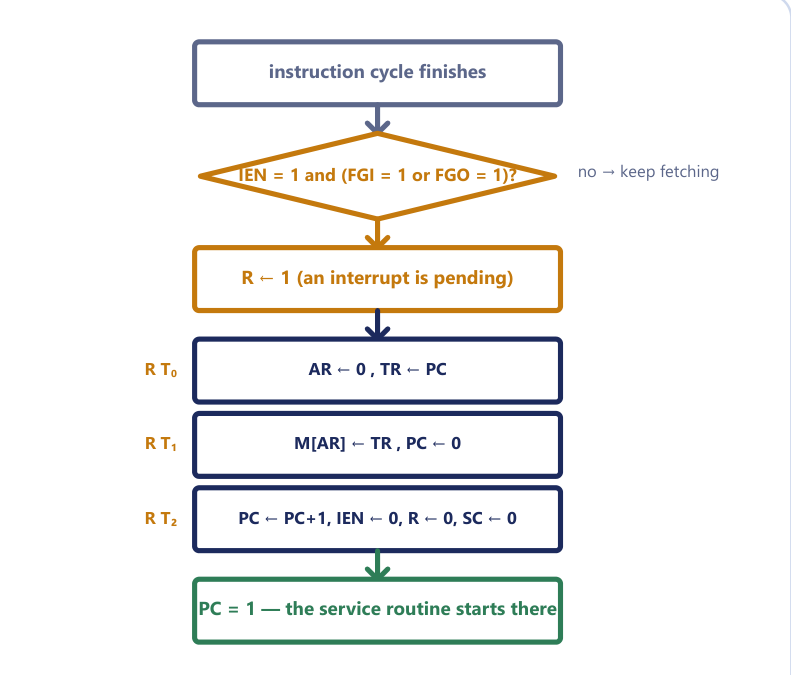
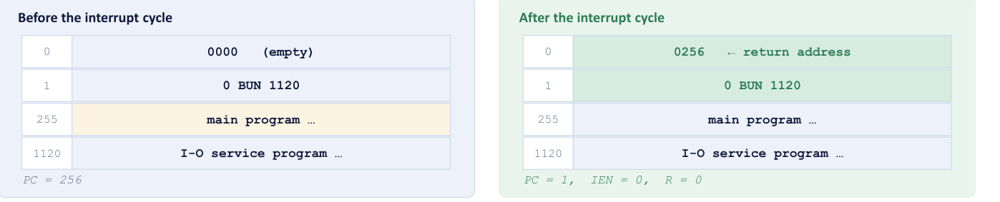

Chapter 11: Register-Reference, Input-Output and Interrupts¶
The instructions that finish in a single step, the way the computer talks to slow devices, and the interrupt that lets it stop waiting
In the previous two chapters we built the machine piece by piece: the registers, the common bus, the 16-bit instruction format, the timing signals produced by the sequence counter, the fetch and decode steps, and the seven memory-reference instructions that need an operand from memory. One whole family of instructions has been left to one side until now. When the three opcode bits are 111, the instruction does not refer to memory at all. Either it works on a register that already sits inside the processor (clear the accumulator, complement it, rotate it, test it) or it talks to the outside world through a pair of small registers and a pair of flags. These instructions are the simplest in the machine, because the whole of their work can be done in one timing step, \(T_3\).
The second half of the chapter uses those input-output instructions to ask a question that every real computer must answer: what should a processor do while it waits for a device that is millions of times slower than itself? The first answer, programmed input-output, is to look at a flag over and over again, which is correct and wasteful. The second answer, the program interrupt, is to carry on with other work and let the device announce itself. We will see exactly how this is added to the basic computer with one extra flip-flop, three microoperations and a small change to the fetch phase, and why the designers made the choices they did.
What you will learn
- Decode the twelve register-reference and six input-output instructions from their one-hot hexadecimal codes, and write each with its control function and microoperation.
- Trace clear, complement, increment, circulate and skip instructions on given register contents, including the effect on the extended-accumulator bit \(E\).
- Explain why the input register, output register and the flags \(FGI\) and \(FGO\) exist, and write the programmed-input-output loops that use them.
- State the exact condition that sets the interrupt flip-flop \(R\) and write the three microoperations of the interrupt cycle.
- Explain why interrupts are taken only between instructions, why \(IEN\) is cleared during the cycle, and how the service routine returns.
- Explain why the fetch microoperations become \(R'T_0\), \(R'T_1\), \(R'T_2\) once interrupts exist.
11.1 Instructions that finish in one step¶
Recall how the 16-bit instruction word is divided. Bit 15 is the mode bit \(I\), bits 14 to 12 are the operation code and bits 11 to 0 hold an address. For opcodes 000 to 110 the address field names a memory word, and the seven memory-reference instructions follow. The eighth opcode, 111, is used differently: it is an escape. The twelve low bits are no longer an address, and the mode bit no longer chooses between direct and indirect addressing. Instead the mode bit separates two classes of instruction.
- With \(D_7 = 1\) and \(I = 0\) the instruction is a register-reference instruction, whose hexadecimal code has the form
7xxx. - With \(D_7 = 1\) and \(I = 1\) the instruction is an input-output instruction, with a code of the form
Fxxx.
Here \(D_7\) is the output of the 3 × 8 operation decoder that is 1 when the opcode is 111. At timing step \(T_3\), the point where the control unit has just finished any indirect-address step, the hardware looks at \(D_7\) and \(I\) and sorts the instruction into one of the two classes. It is customary to give the two conditions their own names:
The signal \(r\) is true only at \(T_3\) and only for a register-reference instruction. The signal \(p\) is true only at \(T_3\) and only for an input-output instruction. Because both classes are over after one timing step, each of them contains the common microoperation \(r\!:\ SC \leftarrow 0\) or \(p\!:\ SC \leftarrow 0\), which returns the sequence counter to zero and starts the next fetch. A register-reference or input-output instruction therefore occupies exactly four clock pulses, \(T_0\) to \(T_3\), compared with five to seven for a memory-reference instruction.
One bit per instruction¶
How does the machine know which of the twelve register-reference instructions it has been given? In a memory-reference instruction the three opcode bits are decoded into eight lines, one of which is chosen. The twelve low bits of a 7xxx word work in a different way. Each bit position is wired to one operation, so the instruction is recognised by which single bit is set. Let \(B_i\) denote bit \(i\) of the instruction register. Then each register-reference instruction is a control function of the form \(rB_i\), the control signal \(r\) ANDed with the bit that selects the operation. Think of the twelve bits as a panel of light switches rather than a dial: flip bit 11 and the accumulator is cleared; flip bit 5 and it is incremented. No decoder is needed, because each bit connects directly to its own small control action, and this is also why these instructions can finish in a single step.
The consequence for hexadecimal codes is that every code is a power of two within the low twelve bits. 7800 has bit 11 set, 7020 has bit 5 set and 7001 has bit 0 set. The same idea holds for the input-output class, where the six instructions use bits 11 down to 6.
The twelve register-reference instructions¶
Table 11.1 lists all twelve. Read the control function and the microoperation together: the symbol before the colon is the condition that must be true, and what follows the colon is what happens on the next clock pulse.
| Symbol | Hex | Bit | Control function and microoperation | Meaning |
|---|---|---|---|---|
| CLA | 7800 |
\(B_{11}\) | \(rB_{11}\): AC ← 0 |
Clear AC |
| CLE | 7400 |
\(B_{10}\) | \(rB_{10}\): E ← 0 |
Clear E |
| CMA | 7200 |
\(B_9\) | \(rB_9\): AC ← AC' |
Complement AC |
| CME | 7100 |
\(B_8\) | \(rB_8\): E ← E' |
Complement E |
| CIR | 7080 |
\(B_7\) | \(rB_7\): AC ← shr AC, AC(15) ← E, E ← AC(0) |
Circulate right through E |
| CIL | 7040 |
\(B_6\) | \(rB_6\): AC ← shl AC, AC(0) ← E, E ← AC(15) |
Circulate left through E |
| INC | 7020 |
\(B_5\) | \(rB_5\): AC ← AC + 1 |
Increment AC |
| SPA | 7010 |
\(B_4\) | \(rB_4\): if (AC(15) = 0) then (PC ← PC + 1) |
Skip if AC positive |
| SNA | 7008 |
\(B_3\) | \(rB_3\): if (AC(15) = 1) then (PC ← PC + 1) |
Skip if AC negative |
| SZA | 7004 |
\(B_2\) | \(rB_2\): if (AC = 0) then (PC ← PC + 1) |
Skip if AC zero |
| SZE | 7002 |
\(B_1\) | \(rB_1\): if (E = 0) then (PC ← PC + 1) |
Skip if E zero |
| HLT | 7001 |
\(B_0\) | \(rB_0\): S ← 0 |
Halt the computer |
Table 11.1. The register-reference instructions. Every one of them also performs \(r\!:\ SC \leftarrow 0\), so each ends at \(T_3\).
Notice how the table is organised. The first two rows act on the accumulator and the extended bit \(E\) by clearing them, the next two complement them, the two circulate instructions rotate the pair, INC adds one, four skip instructions test a condition, and HLT stops everything. We now take these groups in turn.
Example 11.1: Decoding register-reference and input-output words
Problem. Identify each word, giving its class and the instruction: (a) 7800, (b) 7100, (c) 7001, (d) F800, (e) F400, (f) F080.
Working. Write the first hexadecimal digit in binary. A leading 7 is 0111, so \(I = 0\) and the opcode is 111: register-reference. A leading F is 1111, so \(I = 1\) and the opcode is 111: input-output. Then find the single set bit among the low twelve.
| Word | Class | Low 12 bits | Set bit | Instruction |
|---|---|---|---|---|
7800 |
register-reference | 1000 0000 0000 |
\(B_{11}\) | CLA |
7100 |
register-reference | 0001 0000 0000 |
\(B_8\) | CME |
7001 |
register-reference | 0000 0000 0001 |
\(B_0\) | HLT |
F800 |
input-output | 1000 0000 0000 |
\(B_{11}\) | INP |
F400 |
input-output | 0100 0000 0000 |
\(B_{10}\) | OUT |
F080 |
input-output | 0000 1000 0000 |
\(B_7\) | ION |
Answer. CLA, CME and HLT are register-reference instructions; INP, OUT and ION are input-output instructions.
Example 11.2: Writing the control function of an instruction
Problem. Write the control function and the microoperations of CLA, INC, SZA and SPA.
Working. Each instruction is selected by \(D_7 I' T_3\) and its own bit \(B_i\), and it ends with \(SC \leftarrow 0\). Using Table 11.1:
D7 I' T3 B11 : AC ← 0, SC ← 0 (CLA)
D7 I' T3 B5 : AC ← AC + 1, SC ← 0 (INC)
D7 I' T3 B2 : if (AC = 0) then (PC ← PC+1), SC ← 0 (SZA)
D7 I' T3 B4 : if (AC(15) = 0) then (PC ← PC+1), SC ← 0 (SPA)
Answer. As above. The control function matters as much as the transfer: \(D_7I'T_3B_4\) says that the instruction is register-reference, that it is executed at \(T_3\), and that bit 4 selects it.
11.2 Clear, complement and increment¶
The five instructions CLA, CLE, CMA, CME and INC are the arithmetic and logic operations of this family. CLA and CLE set the accumulator or the extended bit to zero. CMA and CME replace their register by its one's complement, that is, they invert every bit of AC or the single bit of \(E\). INC adds one to AC. All five take one clock pulse after \(T_3\) begins and none of them touches memory.
A recurrent confusion concerns what each instruction leaves alone. CMA changes only AC. It does not touch \(E\), and \(E\) is the business of CME, a different instruction. INC adds one to AC but does not touch \(E\), even if the addition wraps from FFFF to 0000, and the carry that would have emerged is simply discarded. Finally, no register-reference instruction changes PC, apart from the skips, and no register-reference instruction needs the address that the decode step copied into AR.
Example 11.3: Executing CMA
Problem. The basic computer has AC = A937 and \(E = 1\). The instruction 7200 (CMA) is stored at address 021, and PC = 021. Find AC, \(E\), PC, AR and IR after CMA has executed. All values are hexadecimal.
Working.
Fetch T0: AR ← PC AR = 021
T1: IR ← M[AR], PC ← PC+1 IR = 7200, PC = 022
Decode T2: AR ← IR(0-11) AR = 200
I ← IR(15) 7 = 0111, so I = 0 and opcode = 111: D7 = 1
Execute T3: D7 I' T3 = r is true. The low 12 bits of 7200 are 0010 0000 0000,
so B9 is set: this is CMA. AC ← AC', SC ← 0
Complement A937 hexadecimal digit by digit, or bit by bit:
A937 = 1010 1001 0011 0111
AC' = 0101 0110 1100 1000 = 56C8
Answer. AC = 56C8, \(E = 1\) (CMA does not touch \(E\)), PC = 022, AR = 200, IR = 7200.
Common slips. There are three. Complementing \(E\) as well (that is CME, a different instruction). Leaving AR at 021, whereas \(T_2\) copied the twelve low bits of IR into AR even though a register-reference instruction never uses them. And leaving PC at 021, forgetting that PC was incremented at \(T_1\).
Two of these instructions together give the most useful operation in the family. The two's complement of a number is its one's complement plus one, so a CMA followed by an INC negates the accumulator.
Example 11.4: What do CLA, CMA, INC do together?
Problem. What is the effect of the three-instruction sequence CLA, CMA, INC, and of CMA, INC on its own when AC = 0005?
Working. CLA gives AC = 0000. CMA complements it: AC = FFFF. INC adds one: FFFF + 1 = 0000, the carry is discarded (INC does not touch \(E\)), so AC returns to 0000. The sequence is the two's-complement negation of zero, and zero is its own negative.
For AC = 0005: CMA gives FFFA; INC gives FFFB, which is \(-5\) in 16-bit two's complement.
Answer. CLA, CMA, INC leaves AC = 0000. CMA followed by INC negates a number: 0005 becomes FFFB.
11.3 The circulate instructions¶
The two instructions CIR and CIL rotate the contents of AC one place, using the extended bit \(E\) as a seventeenth bit. We say that the 16 bits of AC together with \(E\) form a ring of 17 bits.
For CIR, circulate right, every bit of AC moves one place towards the least significant end: AC(15) ← E, AC(14) ← AC(15), and so on down to AC(0) ← AC(1). The bit that falls off the right end, AC(0), does not disappear, because it goes into \(E\), and the old \(E\) enters at the left end. In the notation of Table 11.1: AC ← shr AC, AC(15) ← E, E ← AC(0). CIL is the mirror image: AC ← shl AC, AC(0) ← E, E ← AC(15).
CIR: E → AC(15) → AC(14) → ... → AC(1) → AC(0) → E (right-moving ring of 17 bits)
CIL: E ← AC(15) ← AC(14) ← ... ← AC(1) ← AC(0) ← E (left-moving ring of 17 bits)
Because the ring is closed, nothing is lost. This is what distinguishes a circulate from a plain shift, in which a bit falls off one end and a zero is brought in at the other. A useful check on any trace is that the total number of 1s in \(E\) and AC is the same before and after, and that a CIL followed by a CIR (or the reverse) restores the original values.
Example 11.5: CIR and CIL on AC = 8001
Problem. AC = 8001 and \(E = 0\). Give AC and \(E\) after (a) CIR, (b) then CIL; and say whether SNA would skip in each state.
Working.
(a) 8001 = 1000 0000 0000 0001. CIR moves every bit right. AC(0) = 1 goes into \(E\), and the old \(E\) = 0 enters AC(15). New AC = 0100 0000 0000 0000 = 4000, and \(E = 1\).
(b) CIL moves every bit left. AC(15) = 0 goes into \(E\) and the old \(E\) = 1 enters AC(0). AC = 1000 0000 0000 0001 = 8001, \(E = 0\). We are back where we started, as a left circulation after a right one must be.
(c) SNA skips when AC(15) = 1: it would skip for 8001 and not for 4000.
Answer. (a) AC = 4000, \(E = 1\). (b) AC = 8001, \(E = 0\). (c) SNA skips in the second state only.
Example 11.6: CIL followed by CIR
Problem. AC = B6D1 and \(E = 0\). Apply CIL and then CIR.
Working. B6D1 = 1011 0110 1101 0001. CIL: the old AC(15) = 1 goes to \(E\), all bits move left, and the old \(E\) = 0 enters AC(0). The result is 0110 1101 1010 0010 = 6DA2 with \(E = 1\). CIR on this result: the old AC(0) = 0 goes to \(E\), the bits move right, and the old \(E\) = 1 enters AC(15): 1011 0110 1101 0001 = B6D1, \(E = 0\).
Answer. After CIL, AC = 6DA2 and \(E = 1\); after the following CIR the original AC = B6D1, \(E = 0\) is restored.
Example 11.7: A circular shift on an 8-bit number
Problem. The 8-bit number 0010 1101 is shifted left circularly by 2 positions. Give the result in binary and the hexadecimal value before and after.
Working. 0010 1101 splits into the nibbles 0010 and 1101, which is 2D in hexadecimal. The first circular left shift moves the leading 0 round to the right end: 0010 1101 → 0101 1010. The leading bit is again 0 and wraps round: 0101 1010 → 1011 0100, which is B4 in hexadecimal. As a check, there are four 1s before and four after.
Answer. The result is 1011 0100; the hexadecimal value is 2D before and B4 after.
Circular shift versus logical shift, and when E is involved
A logical left shift feeds zeros in at the right. For the number above it would also give 1011 0100, but only by luck: it gives 1010 1100 for a number with 1s at the top. In a circular shift the bit that leaves the left end re-enters at the right, so count the 1s as a check. Also note that a question that asks for "a left shift by 2 of an 8-bit number" with no mention of \(E\) wants a plain 8-bit circular shift. Bring \(E\) in only when the question is about the basic computer's CIL or CIR instruction, which rotate the 17-bit ring.
Doubling and halving
A shift is also arithmetic. Clearing \(E\) with CLE and then executing CIL doubles an unsigned number in AC, and \(E\) collects the bit that overflowed. CLE followed by CIR halves it, with \(E\) receiving the remainder bit. This is why multiplication and division by powers of two are almost free in hardware, and why shift-and-add is how a simple machine multiplies at all.
11.4 Skip instructions and halt¶
The basic computer has no if statement. What it has instead are the four skip instructions SPA, SNA, SZA and SZE. Each one tests a condition and, if the condition is true, adds one to PC. Since PC was already incremented to point at the next instruction at \(T_1\), this second increment makes it point at the instruction after that, so the very next instruction is skipped.
| Instruction | Skips the next instruction when | Test performed on |
|---|---|---|
| SPA | AC is positive (or zero) | AC(15) = 0 |
| SNA | AC is negative | AC(15) = 1 |
| SZA | AC is zero | all 16 bits of AC are 0 |
| SZE | E is zero | E = 0 |
Table 11.2. The four skip instructions.
SPA and SNA examine only bit 15. The reason is that signed numbers in the basic computer are held in two's complement, and in that representation bit 15 is the sign: 0 means positive or zero, 1 means negative. "Skip if positive" is therefore literally "skip if the top bit is 0", which costs one gate rather than a comparison. Note also that the name SPA is slightly generous, since 0000 has AC(15) = 0 and so SPA also skips when AC is zero.
Skip plus branch is the ancestor of if/else¶
Programmers use the skip instructions by putting a branch (BUN) in the slot that may be skipped. Then "skip the branch" means "fall through" and "do not skip" means "take the branch". For example,
SZA / skip next if AC = 0
BUN NOTZERO / AC was not zero: go there
... / AC was zero: this runs
is exactly the same as the high-level statement if (AC == 0) { ... } else goto NOTZERO;. Every branch that you write in C or Python is compiled down, in the end, to a conditional skip or its equivalent plus a jump. You are looking at the great-grandparent of the if/else statement.
Example 11.8: Which skip instructions fire?
Problem. AC = 0000 and \(E = 1\). Which of SPA, SNA, SZA and SZE cause a skip?
Working. Test each condition against the register contents. SPA: AC(15) = 0, so AC is positive (zero counts) and the instruction skips. SNA: AC(15) = 0, not 1, so no skip. SZA: AC = 0, so it skips. SZE: \(E = 1\), not 0, so no skip.
Answer. SPA and SZA skip; SNA and SZE do not.
Halting the machine¶
The last instruction, HLT, executes S ← 0. Here \(S\) is the start-stop flip-flop: while \(S = 1\) the sequence counter keeps running and the computer fetches and executes instructions, but when \(S = 0\) the computer halts. HLT is the only way a program stops the machine. A program that lacks one simply runs on into whatever happens to be in memory after it.
Composing instructions: subtraction¶
The basic computer has no subtract instruction, but the instructions we have met are enough to build one. Since \(A - B = A + (-B)\), and CMA followed by INC negates the accumulator, subtraction is a short program. We want \(AC \leftarrow AC - M[X]\).
Example 11.9: Subtracting a memory word
Problem. Using only existing instructions, write a sequence that leaves \(AC - M[X]\) in AC, and trace it for AC = 0030 and \(M[X]\) = 0012. Let TMP be a free memory word.
Working. We must negate the memory word, but that destroys AC, because LDA overwrites the accumulator. So AC is first saved in TMP, and then the negated memory word is added to it.
STA TMP / M[TMP] ← AC: save the original AC
LDA X / AC ← M[X]
CMA / AC ← AC'
INC / AC ← AC + 1, so AC = −M[X]
ADD TMP / AC ← AC + M[TMP] = −M[X] + original AC
Trace: after STA, TMP = 0030. After LDA, AC = 0012. CMA gives FFED. INC gives FFEE (which is \(-18\)). ADD adds 0030: FFEE + 0030 = 1001E, so AC = 001E and the carry sets \(E = 1\).
Answer. AC = 001E, that is \(48 - 18 = 30\) in decimal, as required. Here \(E = 1\) merely records that a carry came out of the top bit; for a non-zero subtrahend this happens exactly when the true (unsigned) result is not negative.
Why a SUB register-reference instruction cannot simply be added
Suppose you wanted to add a new one-bit register-reference instruction, say a SUB, to this family. You would need a free bit among \(B_{11}\) to \(B_0\), and there is none: all twelve bits are already taken by CLA down to HLT. The 7xxx field is full. A real design would have to widen the field or reuse some other pattern. This is also a first example of why a microprogrammed control unit, which we meet in the next chapter, makes it easy to add instructions: with a control memory the new instruction would be a new routine, not new wiring.
11.5 Talking to slow devices¶
Now we turn to the six input-output instructions. To understand them we must first look at the way a processor and a keyboard or printer exchange data, because the very large difference in their speeds shapes the whole design.
The input-output configuration¶
Figure 11.1 shows the basic computer's connection to a terminal. A keyboard supplies characters and a printer displays them. Each character is an 8-bit code, so the interface uses two small registers, both 8 bits wide, and one flip-flop for each direction.
- Input register, INPR. The keyboard's interface shifts a character into INPR, 8 bits, and sets the input flag \(FGI\) to 1. The flag means "a character has arrived and is waiting in INPR".
- Output register, OUTR. The computer puts a character into OUTR. The printer takes it, and when it has finished with it, the interface sets the output flag \(FGO\) to 1. The flag means "the printer has finished the last character and can take another".
- The flags. FGI and FGO are two of the seven flip-flops of the machine (the others are \(I\), \(S\), \(E\), \(R\) and \(IEN\)). They tell the CPU when the slow device is ready.
INPR and OUTR are separate from the accumulator, and character transfers pass through the low eight bits of AC. The computer never has to fit its pace to the device, because the registers and flags decouple the two.
Why are the flags needed at all? A processor that operates at megahertz or gigahertz speeds communicates with a keyboard on which someone taps a few characters per second, which is a mismatch of millions to one. If the CPU simply read INPR whenever it liked, it would read garbage. Think of a diner: the fast cook (CPU) does not stare at the slow customer; he just checks whether the "order up" bell has rung (flag = 1). The flag is the bell. The wasteful part is not the bell but how often the cook walks over to check it, a problem to which the interrupt is the solution.
The six input-output instructions¶
All six are recognised by \(D_7 = 1\) and \(I = 1\), so they are controlled by \(p = D_7IT_3\), and all end with \(p\!:\ SC \leftarrow 0\). As with the register-reference class, each is selected by one bit of IR, which we write \(B_i\).
| Symbol | Hex | Control function and microoperation | Meaning |
|---|---|---|---|
| INP | F800 |
\(pB_{11}\): AC(0-7) ← INPR, FGI ← 0 |
Input a character into AC, clear the input flag |
| OUT | F400 |
\(pB_{10}\): OUTR ← AC(0-7), FGO ← 0 |
Output the character in AC, clear the output flag |
| SKI | F200 |
\(pB_9\): if (FGI = 1) then (PC ← PC + 1) |
Skip next instruction if the input flag is set |
| SKO | F100 |
\(pB_8\): if (FGO = 1) then (PC ← PC + 1) |
Skip next instruction if the output flag is set |
| ION | F080 |
\(pB_7\): IEN ← 1 |
Turn the interrupt system on |
| IOF | F040 |
\(pB_6\): IEN ← 0 |
Turn the interrupt system off |
Table 11.3. The input-output instructions.
INP and OUT move the character and, at the same time, clear the flag, so that the flag always reflects "a new, unread character is waiting" (for input) or "the printer is free" (for output). The device sets the flag; the instruction clears it. SKI and SKO are the skip instructions of the input-output family: they let the program test a flag without any other instruction having to be able to read it. ION and IOF control the interrupt system, which we will meet in Section 11.7.
11.6 Programmed input-output and its price¶
Without interrupts, a program must find out for itself whether a device is ready. The technique, called programmed input-output or polling, uses the skip instructions together with a branch back. To read a character:
LOOP, SKI / skip next if FGI = 1
BUN LOOP / flag still 0 - ask again
INP / AC(0-7) ← INPR, clear FGI
SKI looks at the input flag. If no character has arrived (FGI = 0), SKI does not skip, the BUN jumps back to SKI, and the pair loops. The moment FGI becomes 1, SKI skips the BUN and execution falls through to INP, which collects the character. The order of the two instructions matters: SKI first, then BUN. This is a skip over a branch, exactly the idiom of Section 11.4: skip the jump when the thing you are waiting for has happened. Written the other way round (BUN first) the program would never test the flag at all.
Sending a character is similar, but the CPU must wait for the output flag, because it must not put a new character into OUTR while the printer is still busy with the old one:
LOUT, SKO / skip next if FGO = 1
BUN LOUT / printer still busy - ask again
OUT / OUTR ← AC(0-7), clear FGO
Example 11.10: Read a character and echo it to the printer
Problem. Write a program fragment that waits for a key to be pressed, reads the character, waits for the printer to be free, and prints it.
Working. Combine the two loops. The character stays in the low eight bits of AC between the INP and the OUT.
LIN, SKI / is there a character? skip if FGI = 1
BUN LIN / no: look again
INP / yes: AC(0-7) ← INPR, FGI ← 0
LOUT, SKO / is the printer ready? skip if FGO = 1
BUN LOUT / no: look again
OUT / OUTR ← AC(0-7), FGO ← 0
Answer. The six instructions above. Each skip is followed by a BUN back to the skip, so the processor passes through a loop until the corresponding flag is 1.
What programmed input-output costs¶
The method is correct and simple, but the CPU does nothing useful while it waits. Let us put a number on this.
Example 11.11: How much time does the spin loop waste?
Problem. A typist produces a character every 200 ms. The basic computer's clock period is 1 µs (an assumption chosen only to make the arithmetic simple). How many times does the SKI, BUN pair execute between two characters?
Working. SKI is an input-output instruction, so it takes the four pulses \(T_0\) to \(T_3\). A direct BUN takes five pulses, \(T_0\) to \(T_4\) (at \(T_3\) nothing happens for a direct address, and PC ← AR occurs at \(T_4\)). One pass round the loop when the flag is 0 therefore takes \(4 + 5 = 9\) pulses = 9 µs. In 200 ms = 200 000 µs the loop runs \(200\,000 / 9 \approx 22\,000\) times.
Answer. About 22 000 passes, and only the last one of them finds anything to do. With a much faster clock the number grows into the millions, which is the order of magnitude the "million to one" mismatch implies.
Every pass of that loop is work the CPU could have spent on something else. It is like waiting for a parcel by walking to the front door every ten seconds: you never miss the courier, but you get nothing else done and nearly every trip finds nothing. This waste is the motivation for the interrupt system.
11.7 The idea of an interrupt¶
An interrupt reverses the roles. Instead of the processor repeatedly asking the device, the device tells the processor when it is ready. The CPU works without interruption on its program; when the courier arrives, the doorbell rings. The CPU finishes whatever it was doing, puts a bookmark in its work, answers the door by running a short service routine, and then goes back to exactly where it left off. This one idea is why a computer can run a game smoothly and still react at the moment you move the mouse.
For this to work, three things are needed.
- A way to ask. A device must be able to raise a request. In the basic computer the flags FGI and FGO do this.
- A way to be ignored. Sometimes code must not be disturbed. The interrupt-enable flip-flop \(IEN\) is the master switch: it is set by the instruction ION and cleared by IOF, and while it is 0 the flags are ignored.
- A way to come back. The place where the program was interrupted must be saved before control goes elsewhere, so that the program can later resume.
Two flip-flops carry the machinery. IEN, the interrupt-enable flip-flop, we have just described. R, the interrupt flip-flop, is the control flip-flop that says "the next cycle is to be an interrupt cycle instead of a fetch". When \(R = 0\) the computer is in an ordinary instruction cycle; when \(R = 1\) it is in an interrupt cycle.
When R is set¶
The interrupt flip-flop is set by
Each factor of the condition is there for a reason.
| Factor | Meaning |
|---|---|
| \(T_0'T_1'T_2'\) | None of the three fetch-and-decode steps is active: the machine is not in the middle of fetching an instruction |
| \(IEN\) | The interrupt system has been switched on (by ION) |
| \(FGI + FGO\) | At least one device flag is actually set |
If any factor is missing, \(R\) is not set. Note why the first factor is needed. If \(R\) could become 1 while \(T_0\), \(T_1\) or \(T_2\) were active, then a fetch signal such as \(R'T_1\) would stop being true half-way through a fetch, and the machine would be left with a half-fetched instruction. By setting \(R\) only when none of those steps is active, the designers guarantee that an interrupt can begin only after the fetch and decode of an instruction are complete. And since the execute microoperations of the instruction in progress do not depend on \(R\) at all, they run to the end, finishing with \(SC \leftarrow 0\). The effect of \(R = 1\) appears at the start of the next cycle, where \(R'T_0\) is false and \(RT_0\) is true.
Misconception: an interrupt drops whatever the CPU is doing, mid-instruction
It does not. The set condition requires \(T_0'T_1'T_2'\), and the interrupt cycle itself starts only when the sequence counter returns to zero. The current instruction must finish first. Interrupts are therefore checked between instructions, which is what keeps every instruction atomic: you never resume into a half-completed sequence of microoperations, so the machine state is always clean when the service routine runs. If a device raises its flag while an ADD is at \(T_5\), the ADD still runs to its last step, \(SC \leftarrow 0\), and only then does the interrupt cycle begin in place of the next fetch.
11.8 The interrupt cycle¶
When \(R = 1\) the computer does not fetch the next instruction. It carries out the interrupt cycle, which consists of three microoperations controlled by \(RT_0\), \(RT_1\) and \(RT_2\):
RT0: AR ← 0, TR ← PC / aim at memory word 0; save PC in TR
RT1: M[AR] ← TR, PC ← 0 / return address stored at word 0; clear PC
RT2: PC ← PC + 1, IEN ← 0,
R ← 0, SC ← 0 / PC = 1; interrupts off; back to ordinary timing
The cycle saves the return address (the current value of PC) in memory location 0, jumps to location 1, where the service routine, or a branch to it, is stored, and disables further interrupts. Read the three steps as follows.
- \(RT_0\) points the address register at word 0 (
AR ← 0) and parks PC in the temporary register TR for safety. TR is the scratch register of the control unit; this is one of the places where it is used. - \(RT_1\) writes the return address into word 0 (
M[AR] ← TR) and clears PC. The saved value is the address of the instruction that would have been fetched next, which is exactly where the program must resume. - \(RT_2\) increments PC, which becomes 1, so the next instruction is fetched from location 1 where the service routine begins. It also clears \(IEN\), so that the routine cannot itself be interrupted; it clears \(R\), so that ordinary fetching resumes; and it clears \(SC\), so that the timing restarts at \(T_0\).

Figure 11.2 summarises the sequence in the form of a flowchart. In words: at the end of every instruction cycle the control checks whether interrupts are enabled and a flag is up. If so it sets \(R\), which replaces the next fetch with the interrupt cycle. That cycle stores the return address in memory location 0 and transfers control to location 1. \(IEN\) is cleared so that the service routine is not itself interrupted. The routine ends with ION followed by an indirect BUN to location 0, which restores the saved PC.
Why the fetch microoperations gain an R' in front¶
Before interrupts existed, the fetch and decode steps were controlled by \(T_0\), \(T_1\) and \(T_2\) alone. Now the same three timing signals also drive the interrupt cycle. If the fetch microoperations were still written with \(T_0\), \(T_1\) and \(T_2\) on their own, fetch and interrupt would fire at the same time. The two uses are separated by the flip-flop \(R\), which decides what the three beats are used for on this pass:
| \(R = 0\): ordinary instruction cycle | \(R = 1\): interrupt cycle |
|---|---|
\(R'T_0\): AR ← PC |
\(RT_0\): AR ← 0, TR ← PC |
\(R'T_1\): IR ← M[AR], PC ← PC + 1 |
\(RT_1\): M[AR] ← TR, PC ← 0 |
\(R'T_2\): D0...D7 ← decode IR(12-14), AR ← IR(0-11), I ← IR(15) |
\(RT_2\): PC ← PC + 1, IEN ← 0, R ← 0, SC ← 0 |
Table 11.4. One set of timing signals, two possible jobs.
\(T_0\), \(T_1\) and \(T_2\) are just "beat 0, beat 1, beat 2". They carry no meaning of their own, and \(R\) is the switch that chooses the piece of music. The \(R'\) guard makes the two sets of microoperations mutually exclusive, so exactly one of them is active at each timing step. Before interrupts are introduced, \(T_0\), \(T_1\), \(T_2\) is fine; afterwards, always write \(R'T_0\), \(R'T_1\), \(R'T_2\).
Why IEN is cleared, and how the program returns¶
Why should the interrupt cycle clear \(IEN\) before the service routine starts, and why must the routine turn it back on only at the very end? The answer lies in the single fixed location 0. Suppose interrupts stayed enabled throughout. If a second interrupt arrived while the routine was still running, the interrupt cycle would run again and write a new return address into location 0, destroying the first. The original program could then never be resumed. Clearing \(IEN\) makes the service routine uninterruptible, and re-enabling it only after the saved address has been used keeps the single-slot return mechanism safe. Real processors solve the problem more generally with a stack, in which each interrupt pushes its return address into a different slot so that interrupts can be nested, but the lesson is the same: protect the saved state until you no longer need it.
The service routine ends with two instructions:
ION / re-enable interrupts
BUN 0 (I = 1) / indirect jump through location 0
The indirect BUN reads the saved PC from location 0 and loads it into PC, so execution resumes exactly where it was interrupted. The order matters. ION must come before the BUN, because the BUN is the last instruction executed and anything after it never runs. This also happens to be safe: the flag test of the set condition needs \(T_0'T_1'T_2'\), so the first chance for a new interrupt to be recognised after ION is during the BUN, and \(R\) takes effect only after the BUN has completed. The return is therefore never itself interrupted half-way.
A service routine has other jobs. The hardware saves only PC. If the routine uses AC or \(E\), it must save them on entry and restore them before the return, or the interrupted program would find them changed. The routine also has to find out which device asked for service, which it does by testing the flags FGI and FGO.
11.9 The interrupt round trip, worked through¶
Example 11.12: Where does the return address go?
Problem. A program is interrupted while PC = 25C. Where is the return address stored, to which address does control transfer to begin the service routine, and what happens to \(IEN\)?
Working. At \(RT_0\) and \(RT_1\) the value 25C is written, by way of TR, to memory location 0. At \(RT_2\), PC becomes \(0 + 1 = 1\), so the service routine begins at location 1. Also at \(RT_2\), IEN ← 0, which disables further interrupts until the routine executes ION.
Answer. The return address 25C is stored in \(M[0]\); the service starts at PC = 1; \(IEN\) is cleared to 0.
Example 11.13: A complete interrupt round trip
Problem. The main program runs from address 255. The I/O service program starts at 1120, and location 1 holds BUN 1120. The service program ends with an indirect BUN 0. An interrupt is recognised while PC = 256. Trace what happens and how the main program resumes.
Working. Figure 11.3 shows the relevant memory words before and after the interrupt cycle.

Step by step:
- The instruction at
255completes, leaving PC =256. IEN is 1 and a flag is set, so \(R \leftarrow 1\). - The interrupt cycle runs: \(RT_0\):
AR ← 0, TR ← 256; \(RT_1\):M[0] ← 256, PC ← 0; \(RT_2\):PC ← 1, IEN ← 0, R ← 0, SC ← 0. - PC = 1, so the next instruction fetched is
BUN 1120, and control jumps to the service program. - The service program tests the flags, saves AC and \(E\), transfers the character with INP or OUT, restores AC and \(E\), and finishes with ION followed by
BUN 0with \(I = 1\). - That indirect branch reads \(M[0] = 256\) and loads it into PC.
Answer. The main program resumes at 256, exactly where it was interrupted, with nothing lost. Return address 256 is stored in word 0; the routine runs from word 1 (and from there to 1120); ION then BUN I 0 brings control back.
Example 11.14: Explaining the interrupt cycle
Problem. Explain the interrupt cycle with the help of a flowchart. This is a standard question, and a complete answer must contain both the chart and the microoperations.
Working. A full answer contains: (1) a decision box testing \(IEN = 1\) and (\(FGI = 1\) or \(FGO = 1\)); (2) the box setting \(R \leftarrow 1\); (3) the three timesteps written as microoperations; (4) the return address going to memory word 0 and the service routine starting at word 1; (5) \(IEN \leftarrow 0\) together with a sentence saying why. The chart is Figure 11.2, the microoperations are those of the previous section, and the explanation is the paragraph under that figure.
Answer. Drawing the flowchart but never writing the microoperations, or writing them but never drawing the chart, is an incomplete answer. Both are required.
11.10 Summary¶
Key points
- The opcode
111is an escape. With \(I = 0\) the instruction is register-reference (7xxx, control function \(r = D_7I'T_3\)); with \(I = 1\) it is input-output (Fxxx, control function \(p = D_7IT_3\)). Both finish at \(T_3\) with \(SC \leftarrow 0\). - Within each family one bit of IR selects the instruction (\(rB_i\) or \(pB_i\)), so every code is a power of two in the low twelve bits.
- The twelve register-reference instructions clear, complement, circulate and increment AC and \(E\), test them with four skip instructions, and halt the machine. CMA followed by INC negates AC.
- CIR and CIL rotate the 17-bit ring formed by AC and \(E\): nothing is lost, and the number of 1s is unchanged.
- SPA and SNA test
AC(15), the sign bit; the skip instructions followed by a BUN are the origin of every conditional branch. - Slow devices communicate through the 8-bit registers INPR and OUTR and the flags FGI and FGO. INP and OUT transfer a character and clear the flag; SKI and SKO test the flags.
- Programmed input-output,
SKIthenBUNback, is correct but wastes the processor. An interrupt lets the device ask for service instead. - \(R\) is set by \(T_0'T_1'T_2'(IEN)(FGI+FGO)\). The interrupt cycle is \(RT_0\):
AR ← 0, TR ← PC; \(RT_1\):M[AR] ← TR, PC ← 0; \(RT_2\):PC ← PC + 1, IEN ← 0, R ← 0, SC ← 0. - The return address is saved in word 0 and the service routine starts at word 1. The routine ends with ION and an indirect BUN 0.
- Once interrupts exist the fetch microoperations are written \(R'T_0\), \(R'T_1\), \(R'T_2\).
| Class | Condition | Select | Instructions | Cycles used |
|---|---|---|---|---|
| Register-reference | \(D_7I'T_3 = r\) | \(B_{11} \ldots B_0\) | CLA CLE CMA CME CIR CIL INC SPA SNA SZA SZE HLT | \(T_0\) to \(T_3\) |
| Input-output | \(D_7IT_3 = p\) | \(B_{11} \ldots B_6\) | INP OUT SKI SKO ION IOF | \(T_0\) to \(T_3\) |
| Interrupt cycle | \(R = 1\) | \(RT_0, RT_1, RT_2\) | (no instruction: saves PC at word 0, branches to word 1) | three pulses |
Table 11.5. Summary of the three groups covered in this chapter.
11.11 Exercises¶
Exercise 11.1. The hexadecimal code 7800 corresponds to which instruction?
- A. CLA
- B. CMA
- C. INP
- D. HLT
Answer
A. The leading 7 means opcode 111 with \(I = 0\), a register-reference instruction, and the set bit is \(B_{11}\), which is CLA. (CMA is 7200, INP is F800, HLT is 7001.)
Exercise 11.2. Which instruction turns the interrupt system on?
- A. ION
- B. IOF
- C. SKI
- D. INP
Answer
A. ION (F080) executes IEN ← 1. IOF clears IEN, SKI tests FGI and INP reads a character.
Exercise 11.3. During the interrupt cycle the return address (PC) is stored in memory location
- A. 1
- B. 0
- C. FFF
- D. the effective address
Answer
B. \(RT_1\) writes M[AR] ← TR with AR = 0. Control then goes to location 1, not the address where the return is stored.
Exercise 11.4. Interrupts are enabled (\(IEN = 1\)) and \(FGO\) becomes 1 while the CPU is half-way through an ADD instruction, at \(T_5\). The interrupt flip-flop \(R\) is set:
- A. immediately at \(T_5\)
- B. only after the current instruction finishes, when \(T_0'T_1'T_2'\) holds
- C. never, because ADD disables interrupts
- D. at the next \(T_3\)
Answer
B. Interrupts are taken only between instructions: the set condition is not allowed to disturb the fetch and decode of an instruction, the ADD runs to completion, finishing with \(SC \leftarrow 0\), and the interrupt cycle then replaces the next fetch. Choice A would leave a half-executed instruction; no instruction disables interrupts apart from the interrupt cycle itself and IOF.
Exercise 11.5. True or false: "When an interrupt occurs, the CPU abandons the current instruction at once and starts the interrupt cycle."
Answer
False. The set condition contains \(T_0'T_1'T_2'\) and the interrupt cycle starts only when the sequence counter has returned to zero, so the current instruction is completed first. This keeps every instruction atomic and the machine state consistent when the service routine starts.
Exercise 11.6. AC = 7FFF and \(E = 0\). Give AC and \(E\) after one CIL, and after a second CIL.
Answer
7FFF = 0111 1111 1111 1111. First CIL: AC(15) = 0 goes to \(E\), so \(E = 0\); the bits move left and the old \(E\) = 0 enters AC(0): AC = 1111 1111 1111 1110 = FFFE. Second CIL: AC(15) = 1 goes to \(E\), so \(E = 1\); the old \(E\) = 0 enters AC(0): AC = 1111 1111 1111 1100 = FFFC.
Result: FFFE, \(E = 0\) after the first; FFFC, \(E = 1\) after the second.
Exercise 11.7. AC = 3FFF and \(E = 1\). What are AC and \(E\) after CIR?
Answer
3FFF = 0011 1111 1111 1111. CIR: \(E\) (= 1) enters AC(15) and AC(0) (= 1) goes into \(E\). AC = 1001 1111 1111 1111 = 9FFF, \(E = 1\).
Exercise 11.8. Perform a right circular shift by 3 on the 8-bit number 1001 0110, and give the hexadecimal value before and after.
Answer
1001 0110 = 96. After one position: 0100 1011; after two: 1010 0101; after three: 1101 0010 = D2. The count of 1s is four before and after, as a circular shift requires.
Exercise 11.9. Write the control function and the microoperation of CME, SNA and SKO.
Answer
D7 I' T3 B8 : E ← E', SC ← 0 (CME)
D7 I' T3 B3 : if (AC(15) = 1) then (PC ← PC + 1), SC ← 0 (SNA)
D7 I T3 B8 : if (FGO = 1) then (PC ← PC + 1), SC ← 0 (SKO)
CME and SNA are register-reference (\(r = D_7I'T_3\)); SKO is input-output (\(p = D_7IT_3\)) and uses bit 8 of IR in that class.
Exercise 11.10. Write a short sequence that branches to ZERO if AC is zero and to NOTZERO otherwise, using SZA and BUN.
Answer
SZA / skip next if AC = 0
BUN NOTZERO / AC ≠ 0: go to NOTZERO
BUN ZERO / AC = 0: SZA skipped the line above
If AC = 0, SZA adds one to PC, skipping BUN NOTZERO, so BUN ZERO runs. If AC ≠ 0, SZA does nothing and BUN NOTZERO runs.
Exercise 11.11. Explain what the two instructions SKI followed by BUN back to the SKI do together, and why they are written in this order.
Answer
SKI skips the next instruction when FGI = 1, that is, when a character has arrived. The BUN immediately after it jumps back to the SKI. So while no character has arrived the pair loops, and the instant one does, the BUN is skipped and the program falls through to the INP that follows. This is a busy-wait: correct and simple, but a total waste of the processor, which is why interrupts exist. The order matters because the skip must precede the branch it is meant to jump over.
Exercise 11.12. State the exact condition that sets the interrupt flip-flop \(R\) and say what each factor ensures.
Answer
\(T_0'T_1'T_2'(IEN)(FGI + FGO)\!:\ R \leftarrow 1\). The factor \(T_0'T_1'T_2'\) ensures that \(R\) cannot change during the fetch and decode of an instruction (interrupts come between instructions); \(IEN\) ensures that the interrupt system is switched on; \(FGI + FGO\) ensures that at least one device actually needs service.
Exercise 11.13. An instruction at 0A3 has just completed, leaving PC = 0A4. \(IEN = 1\) and \(FGO = 1\). Location 1 holds 0 BUN 0300. Give the contents of AR, TR, PC, \(IEN\), \(R\) and \(M[0]\) after \(RT_0\), \(RT_1\) and \(RT_2\).
Answer
- After \(RT_0\) (
AR ← 0, TR ← PC): AR =000, TR =0A4. - After \(RT_1\) (
M[AR] ← TR, PC ← 0): \(M[0]\) =00A4, PC =000. - After \(RT_2\) (
PC ← PC + 1, IEN ← 0, R ← 0, SC ← 0): PC =001, \(IEN = 0\), \(R = 0\).
The next instruction fetched is the one at location 1, BUN 0300, which sends control to the service routine at 300. On return the indirect BUN 0 loads PC from \(M[0]\) = 00A4.
Exercise 11.14. Why is \(IEN\) cleared during the interrupt cycle, and which instruction sets it again?
Answer
So that the service routine is not itself interrupted while it is still saving the machine's state: a second interrupt at that moment would overwrite memory word 0, and the first return address would be lost for ever. ION (F080) sets \(IEN\) again, and is issued at the end of the routine, just before the indirect BUN that returns.
Exercise 11.15. Why must the fetch microoperations be written \(R'T_0\), \(R'T_1\), \(R'T_2\) once interrupts exist?
Answer
Because \(T_0\), \(T_1\) and \(T_2\) now have two possible meanings: fetch when \(R = 0\), interrupt when \(R = 1\). The \(R'\) guard makes the two sets mutually exclusive, so exactly one of them is active at each timing step. Without it, the fetch and the interrupt cycle would fire at the same time.
Exercise 11.16. Explain why allowing an interrupt to be taken in the middle of the execute phase of a memory-reference instruction (say ISZ, between \(T_5\) and \(T_6\)) could corrupt the program.
Answer
Because the return address is the PC, and PC already points at the next instruction. If the cycle were entered after \(T_5\) of ISZ, the incremented value would be in DR but would never be written back to memory by \(T_6\), and the service routine, which uses DR, AC and memory itself, would overwrite it. When the program resumed it would continue with the instruction after the ISZ, so the increment (and the possible skip) would be lost and the program would see inconsistent state. Finishing the instruction first, which is what \(T_0'T_1'T_2'\) together with the end-of-instruction reset of \(SC\) ensures, keeps every instruction atomic.
Exercise 11.17. Subtract with the instructions of this chapter. Suppose AC = 0100 and \(M[X]\) = 0040. Use the sequence of Example 11.9 and give AC and \(E\) at the end.
Answer
STA TMP: \(M[TMP]\) = 0100. LDA X: AC = 0040. CMA: AC = FFBF. INC: AC = FFC0 (\(-64\)). ADD TMP: FFC0 + 0100 = 100C0, so AC = 00C0 and \(E = 1\). The result 00C0 = 192 = 256 - 64, as required.
Exercise 11.18. Self-test (closed book). (a) Why does a keyboard interface need an input flag at all? (b) Give the four register-reference skip instructions and the test each performs. (c) Where is the return address saved during an interrupt, and where does control go? (d) What does the \(R'\) do in \(R'T_1\)?
Answer
(a) The keyboard is about a million times slower than the processor. The flag, a one-bit letterbox, is raised by the device when a character is ready, and the CPU checks it instead of guessing. (b) SPA (AC(15) = 0), SNA (AC(15) = 1), SZA (AC = 0), SZE (E = 0). (c) The return address (PC) is stored in memory location 0; control goes to location 1, with \(IEN\) and \(R\) cleared. (d) It makes the ordinary fetch step apply only when \(R = 0\), so that \(T_1\) is free to mean \(RT_1\) of the interrupt cycle when \(R = 1\).